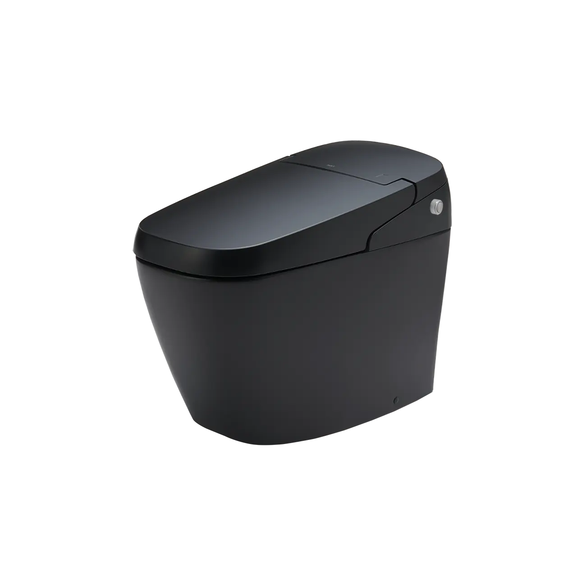
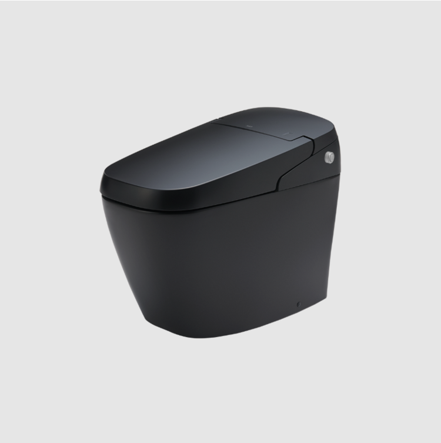

Bồn cầu thông minh INAX AC-G216VN/BKG (Satis G) phiên bản màu đen huyền bí là biểu tượng của sự sang trọng, lịch lãm và công nghệ vệ sinh đỉnh cao đến từ Nhật Bản. Với thiết kế không két nước tối giản và hàng loạt tính năng tự động thông minh, sản phẩm này không chỉ là một thiết bị vệ sinh mà còn là một tác phẩm nghệ thuật nâng tầm không gian sống hiện đại.Thiết kế tối giản và đẳng cấp vượt thời gianSở hữu kích thước tiêu chuẩn 705x375x540 mm (DxRxC), INAX AC-G216VN/BKG loại bỏ hoàn toàn phần két nước cồng kềnh, tạo nên một hình khối liền mạch, gọn gàng. Lớp hoàn thiện màu đen mờ kết hợp cùng kiểu dáng bo cong mềm mại mang lại vẻ ngoài mạnh mẽ, quyền lực, đặc biệt phù hợp với các căn hộ penthouse, biệt thự cao cấp hoặc những phòng tắm có thiết kế nội thất tối màu.Công nghệ men sứ Aqua Ceramic độc quyền INAX với các tính năng đột pháCông nghệ Aqua Ceramic là công nghệ men sứ độc quyền giúp bề mặt bồn cầu siêu ưa nước. Theo đó, nước có thể len lỏi vào dưới các vết bẩn và cặn khoáng để đẩy chúng trôi đi dễ dàng, giữ cho lòng bầu luôn trắng sáng và sạch sẽ suốt 100 năm.Dưới đây là những tính năng đột phá của công nghệ Aqua Ceramic độc quyền của INAX:Plasmacluster diệt khuẩn: Các ion Plasmacluster được phóng thích vào trong lòng bầu để tiêu diệt vi khuẩn và nấm mốc, giúp khử mùi hôi và đảm bảo môi trường vệ sinh an toàn tuyệt đối cho người dùng.Đệm bọt chống bắn: Một lớp đệm bọt mịn được tạo ra trên bề mặt nước trong lòng bồn cầu giúp ngăn chặn tình trạng nước bắn ngược lên khi sử dụng, giữ cho bệ ngồi luôn khô ráo.Lá chắn khí ngăn mùi: Hệ thống lá chắn khí thông minh giúp ngăn chặn mùi hôi thoát ra ngoài và thực hiện khử mùi tự động bằng màng lọc Carbon ngay trong quá trình sử dụng.Tiện nghi thông minh nâng tầm trải nghiệmBồn cầu thông minh AC-G216VN/BKG được tích hợp đầy đủ các tính năng tự động hóa giúp người dùng tận hưởng sự thoải mái tối đa:Hệ thống đóng/mở tự động: Cảm biến hồng ngoại nhận diện người dùng để tự động mở nắp khi đến gần và đóng lại khi rời đi, hạn chế việc chạm tay trực tiếp để đảm bảo vệ sinh.Hệ thống xả nước tự động thông minh: Tự động tính toán lượng nước xả phù hợp (3L hoặc 4.5L) dựa trên thời gian sử dụng, giúp tiết kiệm nước tối ưu mà vẫn đảm bảo hiệu quả làm sạch.Bơm điện tích hợp: Đảm bảo dòng xả mạnh mẽ và ổn định ngay cả ở những công trình có áp lực nước thấp.Vòi phun kép đa năng: Bao gồm vòi rửa đại tiện và vòi rửa dành riêng cho phụ nữ với khả năng điều chỉnh vị trí, áp lực và nhiệt độ nước. Tính năng phun massage mang lại cảm giác thư giãn và kích thích tuần hoàn máu.Hệ thống sấy khô bằng khí ẩm: Giúp người dùng cảm thấy dễ chịu mà không cần dùng đến giấy vệ sinh.Ngoài các đặc điểm trên, bồn cầu thông minh INAX AC-G216VN/BKG còn ghi điểm với các chi tiết tinh tế như đèn phát sáng ban đêm hỗ trợ người dùng mà không cần bật đèn lớn, cùng chế độ tiết kiệm điện thông minh chỉ hoạt động khi cần thiết. Đây chính là giải pháp vệ sinh toàn diện, kết hợp giữa công nghệ bảo vệ sức khỏe và phong cách sống thượng lưu.Video giới thiệu công nghệ Aqua Ceramic độc quyền INAXBản vẽ lắp đặt bồn cầu thông minh SATIS AC-216VN/BKGFile hướng dẫn lắp đặt bồn cầu thông minh AC-G216VN/BKGThông số kỹ thuật bồn cầu thông minh SATIS AC-216VN/BKGMã sản phẩmAC-G216VN/BKG (Satis G)Loại sản phẩmBồn cầu điện tử thông minh (Smart Toilet)Kích thước705 x 375 x 540 mm (Dài x Rộng x Cao)Thương hiệuINAXMàu sắcĐen Matte (BKG) - Đẳng cấp, huyền bí và sang trọngCông nghệ xảHệ thống xả tự động tích hợp bơm trợ lực mạnh mẽ, xả sạch hoàn toàn bất kể áp lực nướcLượng nước xảXả nhấn kép (Dual Flush): 4.5L (đại) / 3.0L (tiểu) siêu tiết kiệmTính năng nổi bật- Aqua Ceramic: Lớp men độc quyền chống bám bẩn, giữ lòng bầu luôn sáng bóng suốt 100 năm - Plasmacluster: Công nghệ ion diệt khuẩn, khử mùi toàn diện bên trong lòng bồn cầu và không gian xung quanh - Đệm bọt: Tạo lớp bọt mịn dày ngăn bắn nước và giảm thiểu tiếng ồn khi sử dụng - Lá chắn khí: Khóa mùi hôi thoát ra ngoài bằng luồng khí đối lưu thông minhĐiều khiểnTrang bị Remote điều khiển từ xa không dây cao cấp, giao diện trực quan và dễ sử dụngKhác- Hotline tư vấn và bảo hành chính hãng: 18006633
Bồn cầu thông minh AC-G216VN/BKG
Bàn cầu thông minh thương hiệu INAX.
Đã cập nhật danh sách yêu thích.
DANH MỤC: Bàn cầu thông minh
MÃ SẢN PHẨM: AC-G216VN/BKG
DEPTH: 705mm
HEIGHT: 375mm
WIDTH: 540mm
Bồn cầu thông minh INAX AC-G216VN/BKG (Satis G) phiên bản màu đen huyền bí là biểu tượng của sự sang trọng, lịch lãm và công nghệ vệ sinh đỉnh cao đến từ Nhật Bản. Với thiết kế không két nước tối giản và hàng loạt tính năng tự động thông minh, sản phẩm này không chỉ là một thiết bị vệ sinh mà còn là một tác phẩm nghệ thuật nâng tầm không gian sống hiện đại.Thiết kế tối giản và đẳng cấp vượt thời gianSở hữu kích thước tiêu chuẩn 705x375x540 mm (DxRxC), INAX AC-G216VN/BKG loại bỏ hoàn toàn phần két nước cồng kềnh, tạo nên một hình khối liền mạch, gọn gàng. Lớp hoàn thiện màu đen mờ kết hợp cùng kiểu dáng bo cong mềm mại mang lại vẻ ngoài mạnh mẽ, quyền lực, đặc biệt phù hợp với các căn hộ penthouse, biệt thự cao cấp hoặc những phòng tắm có thiết kế nội thất tối màu.Công nghệ men sứ Aqua Ceramic độc quyền INAX với các tính năng đột pháCông nghệ Aqua Ceramic là công nghệ men sứ độc quyền giúp bề mặt bồn cầu siêu ưa nước. Theo đó, nước có thể len lỏi vào dưới các vết bẩn và cặn khoáng để đẩy chúng trôi đi dễ dàng, giữ cho lòng bầu luôn trắng sáng và sạch sẽ suốt 100 năm.Dưới đây là những tính năng đột phá của công nghệ Aqua Ceramic độc quyền của INAX:Plasmacluster diệt khuẩn: Các ion Plasmacluster được phóng thích vào trong lòng bầu để tiêu diệt vi khuẩn và nấm mốc, giúp khử mùi hôi và đảm bảo môi trường vệ sinh an toàn tuyệt đối cho người dùng.Đệm bọt chống bắn: Một lớp đệm bọt mịn được tạo ra trên bề mặt nước trong lòng bồn cầu giúp ngăn chặn tình trạng nước bắn ngược lên khi sử dụng, giữ cho bệ ngồi luôn khô ráo.Lá chắn khí ngăn mùi: Hệ thống lá chắn khí thông minh giúp ngăn chặn mùi hôi thoát ra ngoài và thực hiện khử mùi tự động bằng màng lọc Carbon ngay trong quá trình sử dụng.Tiện nghi thông minh nâng tầm trải nghiệmBồn cầu thông minh AC-G216VN/BKG được tích hợp đầy đủ các tính năng tự động hóa giúp người dùng tận hưởng sự thoải mái tối đa:Hệ thống đóng/mở tự động: Cảm biến hồng ngoại nhận diện người dùng để tự động mở nắp khi đến gần và đóng lại khi rời đi, hạn chế việc chạm tay trực tiếp để đảm bảo vệ sinh.Hệ thống xả nước tự động thông minh: Tự động tính toán lượng nước xả phù hợp (3L hoặc 4.5L) dựa trên thời gian sử dụng, giúp tiết kiệm nước tối ưu mà vẫn đảm bảo hiệu quả làm sạch.Bơm điện tích hợp: Đảm bảo dòng xả mạnh mẽ và ổn định ngay cả ở những công trình có áp lực nước thấp.Vòi phun kép đa năng: Bao gồm vòi rửa đại tiện và vòi rửa dành riêng cho phụ nữ với khả năng điều chỉnh vị trí, áp lực và nhiệt độ nước. Tính năng phun massage mang lại cảm giác thư giãn và kích thích tuần hoàn máu.Hệ thống sấy khô bằng khí ẩm: Giúp người dùng cảm thấy dễ chịu mà không cần dùng đến giấy vệ sinh.Ngoài các đặc điểm trên, bồn cầu thông minh INAX AC-G216VN/BKG còn ghi điểm với các chi tiết tinh tế như đèn phát sáng ban đêm hỗ trợ người dùng mà không cần bật đèn lớn, cùng chế độ tiết kiệm điện thông minh chỉ hoạt động khi cần thiết. Đây chính là giải pháp vệ sinh toàn diện, kết hợp giữa công nghệ bảo vệ sức khỏe và phong cách sống thượng lưu.Video giới thiệu công nghệ Aqua Ceramic độc quyền INAXBản vẽ lắp đặt bồn cầu thông minh SATIS AC-216VN/BKGFile hướng dẫn lắp đặt bồn cầu thông minh AC-G216VN/BKGThông số kỹ thuật bồn cầu thông minh SATIS AC-216VN/BKGMã sản phẩmAC-G216VN/BKG (Satis G)Loại sản phẩmBồn cầu điện tử thông minh (Smart Toilet)Kích thước705 x 375 x 540 mm (Dài x Rộng x Cao)Thương hiệuINAXMàu sắcĐen Matte (BKG) - Đẳng cấp, huyền bí và sang trọngCông nghệ xảHệ thống xả tự động tích hợp bơm trợ lực mạnh mẽ, xả sạch hoàn toàn bất kể áp lực nướcLượng nước xảXả nhấn kép (Dual Flush): 4.5L (đại) / 3.0L (tiểu) siêu tiết kiệmTính năng nổi bật- Aqua Ceramic: Lớp men độc quyền chống bám bẩn, giữ lòng bầu luôn sáng bóng suốt 100 năm - Plasmacluster: Công nghệ ion diệt khuẩn, khử mùi toàn diện bên trong lòng bồn cầu và không gian xung quanh - Đệm bọt: Tạo lớp bọt mịn dày ngăn bắn nước và giảm thiểu tiếng ồn khi sử dụng - Lá chắn khí: Khóa mùi hôi thoát ra ngoài bằng luồng khí đối lưu thông minhĐiều khiểnTrang bị Remote điều khiển từ xa không dây cao cấp, giao diện trực quan và dễ sử dụngKhác- Hotline tư vấn và bảo hành chính hãng: 18006633
DANH MỤC: Bàn cầu thông minh
MÃ SẢN PHẨM: AC-G216VN/BKG
DEPTH: 705mm
HEIGHT: 375mm
WIDTH: 540mm